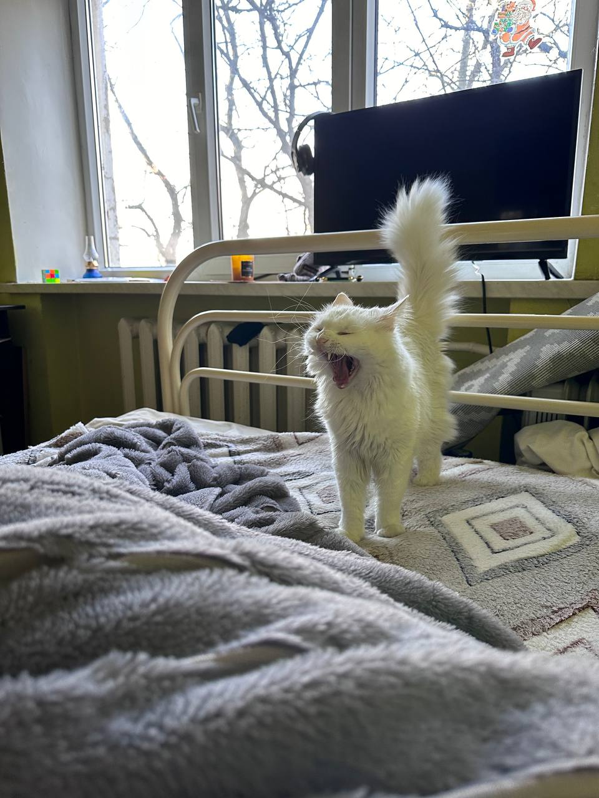

Ко́шка (лат. Felis catus) — домашнее животное, одно из наиболее популярных «животных-компаньонов»
Номер 10: Кошки - смешные
Номер 9: Кошки независимы
Номер 8: Кошки помогают избавиться от насекомых и грызунов
Номер 7: Кошки не катаются в помоях и не воняют
Номер 6: Кошки помогают вам иметь здоровое сердце
Номер 5: Кошки тихие
Номер 4: за кошками легко ухаживать
Номер 3: в плохую погоду кошку не обязательно выводить на горшок
Номер 2: кошки не прыгают на ваших друзей, когда они подходят
Номер 1: Кошки мурлыкают